Portafolio de Proyectos
Cinco aplicaciones prácticas sobre amplificadores operacionales, cada una diseñada analíticamente, simulada en NI Multisim e implementada en protoboard con validación experimental mediante osciloscopio Rigol y generador de funciones.
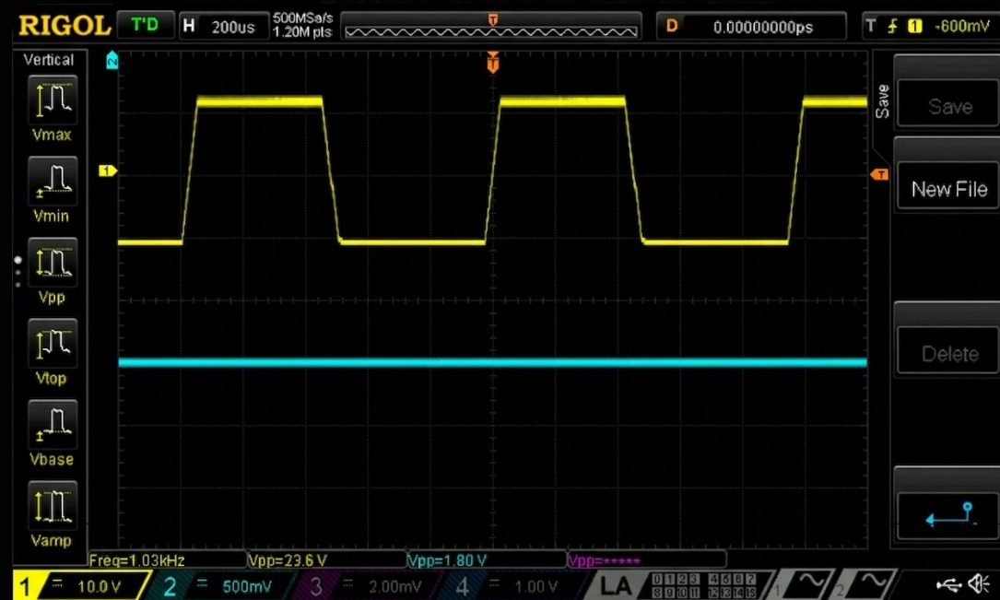
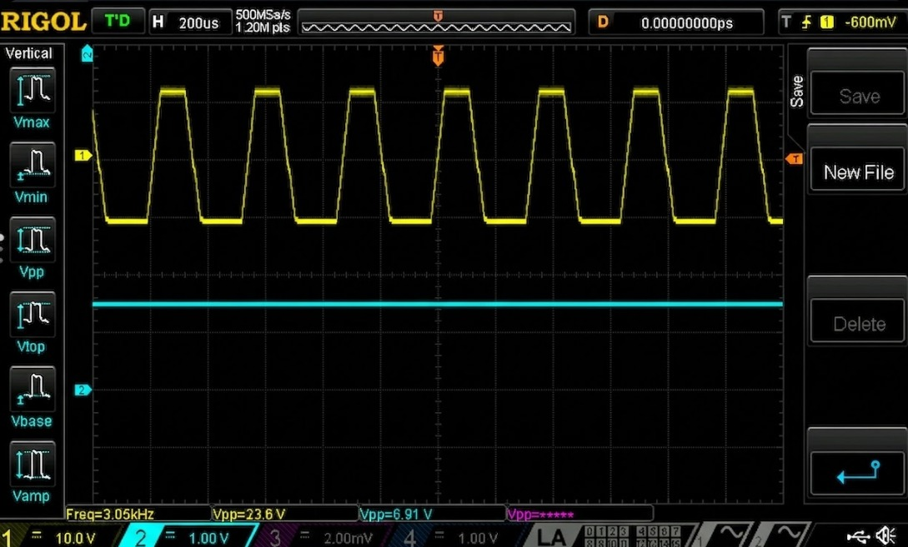
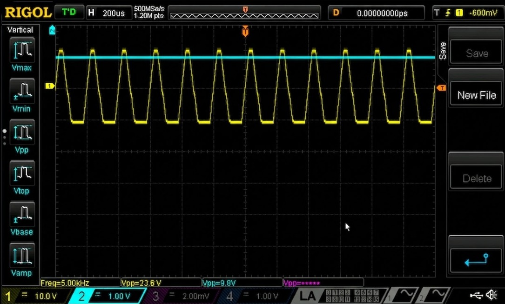
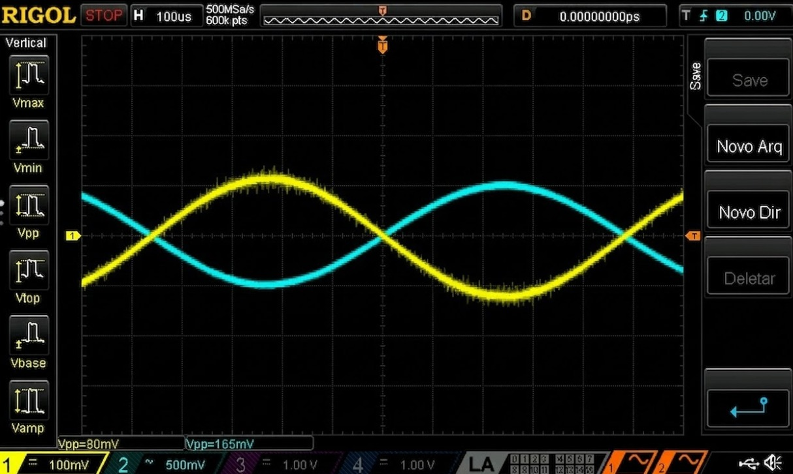
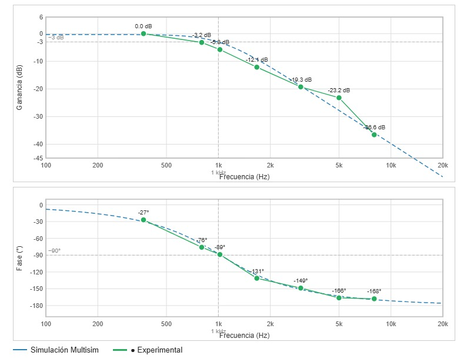


MVP de instrumentación analógica que acondiciona la señal de un termopar tipo K para visualizar la curva de tueste de café en tiempo real mediante un osciloscopio o multímetro, sin ningún componente digital. Desarrollado para la sala CESURCAFÉ de la USCO bajo el ciclo Crear → Medir → Aprender de Lean Startup.
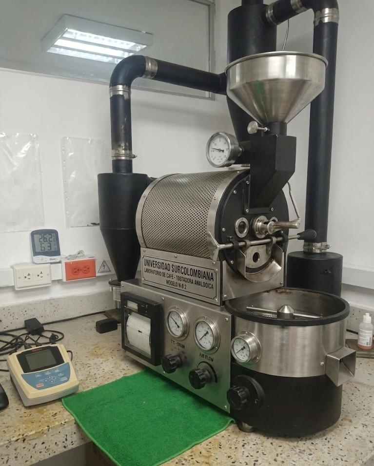
La tostadora no contaba con registro automático de temperatura ni curva de tueste. Los datos se anotaban a mano, impidiendo la reproducibilidad del proceso y el control de calidad del café.
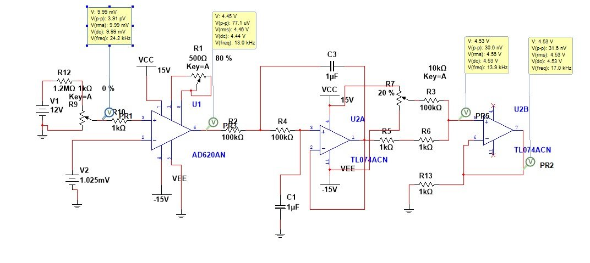

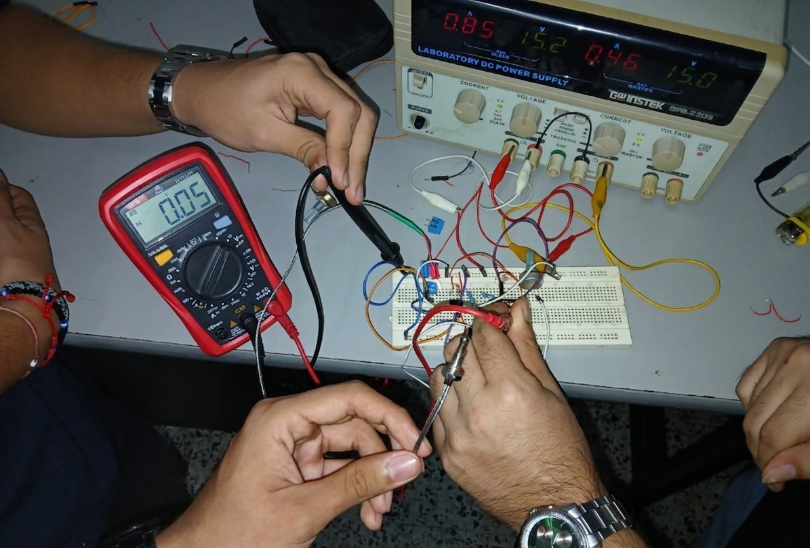
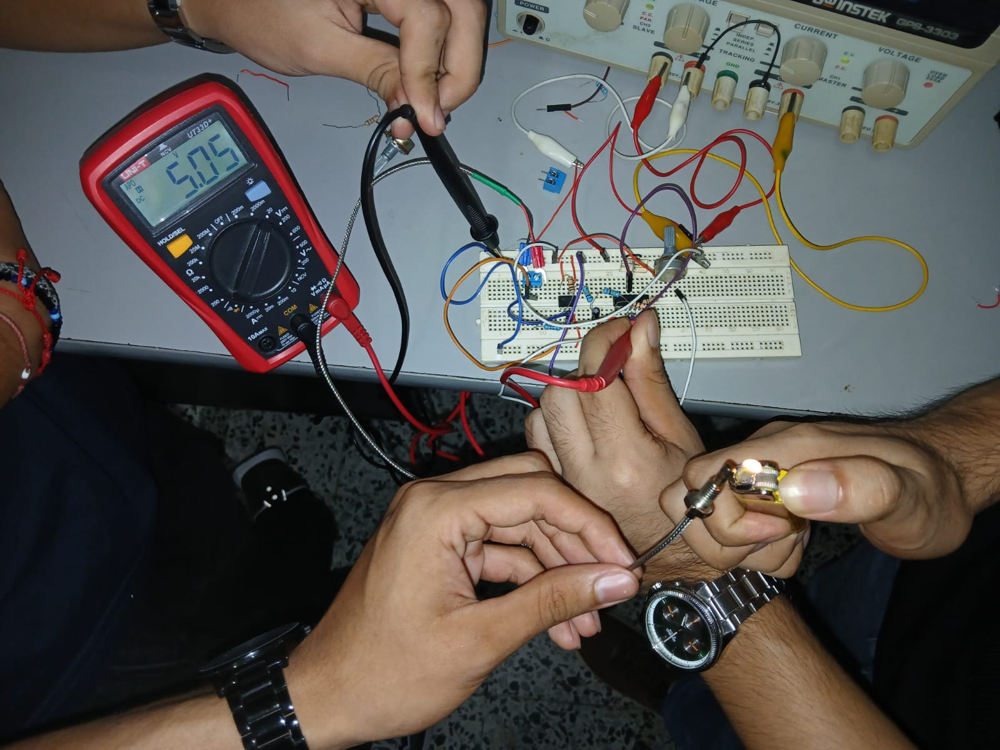
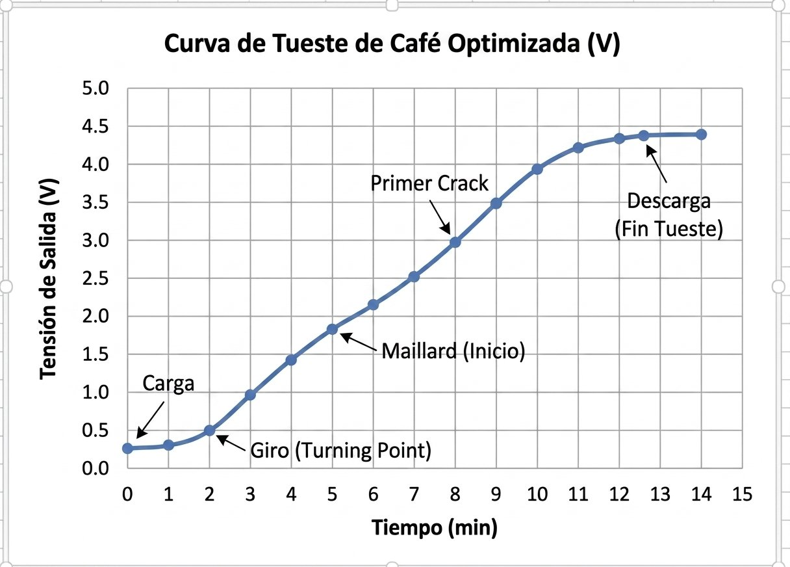
La encargada de CESURCAFÉ validó el prototipo funcionalmente: la curva era legible y reproducible. Se decidió perseverar en la arquitectura e iterar en el filtrado, compensación de unión fría y alarma de temperatura.
| Parámetro | Teórico | Simulado | Experimental | Error (%) |
|---|---|---|---|---|
| Ganancia total G | 495 | 493.2 | 493 | 0.40 |
| fc del filtro (Hz) | 1.59 | 1.62 | 1.53 | 3.77 |
| Vout a 25°C (mV) | 108.6 | 105.0 | 50.0 | 53.9† |
† Error atribuible al offset parásito de juntas en protoboard (efecto Seebeck) y offset del AD620AN amplificado por G=495.
Tutorial técnico completo del flujo de diseño PCB en EasyEDA aplicado a un detector de continuidad basado en NE555. Desde la captura del esquemático hasta los archivos Gerber para fabricación industrial en JLCPCB, con criterios DRC, DFM y costo total muy por debajo del límite de 20 USD.
| Parámetro | Selección |
|---|---|
| Capas de cobre | 2 capas |
| Dimensiones | 62.49 × 42.42 mm |
| Color de máscara | Verde |
| Acabado superficial | HASL con plomo |
| Espesor de tarjeta | 1.6 mm |
| Espesor del cobre | 1 oz |
| Perforaciones | Solo PTH estándar |
| Cantidad mínima | 5 unidades |
| Concepto | Costo (USD) |
|---|---|
| Componentes (1 unidad) | $1.246 |
| PCB JLCPCB (1 unidad) | $0.400 |
| Total | $1.646 |
Documento conceptual que establece la base de diseño para un sintetizador analógico de señal ECG capaz de reproducir un ciclo cardíaco normal y tres anomalías seleccionadas. El enfoque modela cada subonda (P, Q, R, S, T) como señal independiente que luego se suma para reconstruir la morfología completa.
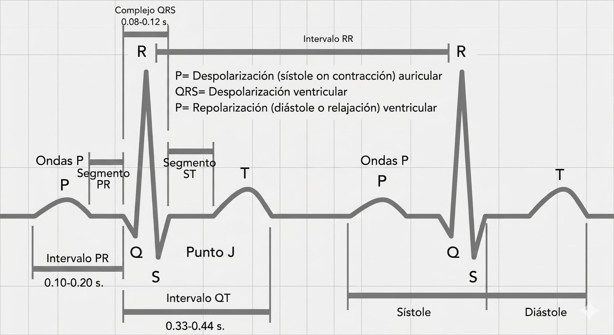
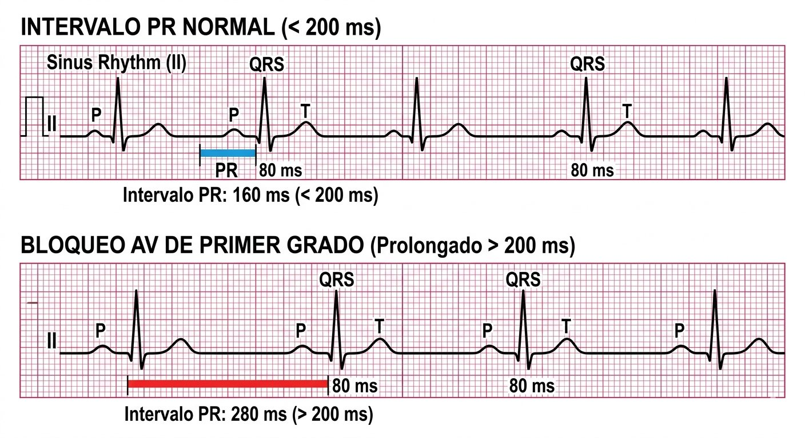
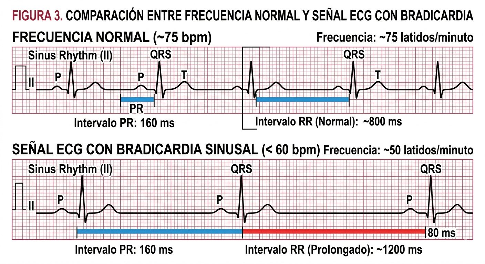
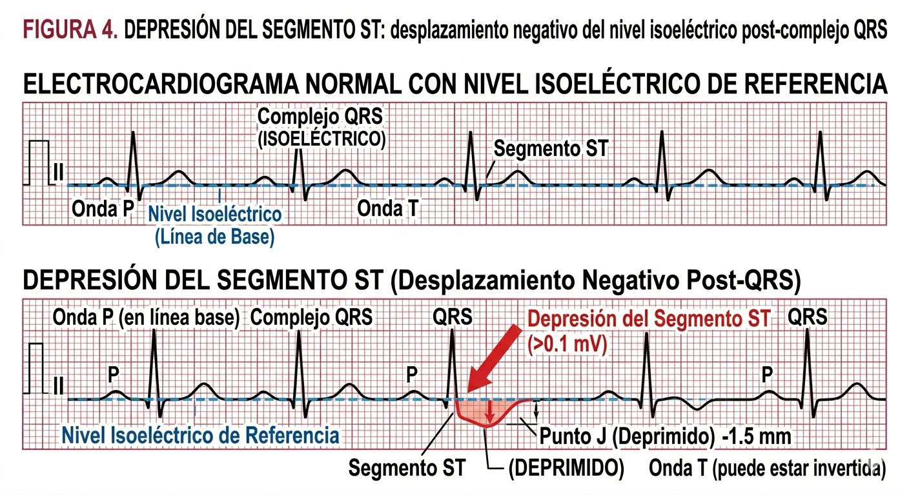
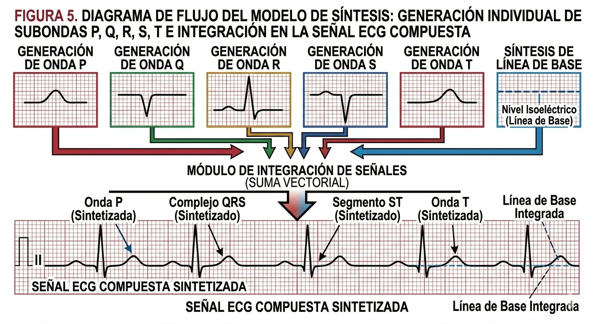
Este proyecto materializa el marco conceptual del Proyecto 4 mediante el diseño, implementación y validación experimental de un prototipo funcional del sintetizador analógico de señal ECG. El énfasis está en traducir la arquitectura de subondas a un sistema estable, medible y ajustable, verificable con osciloscopio y documentado para fabricación.